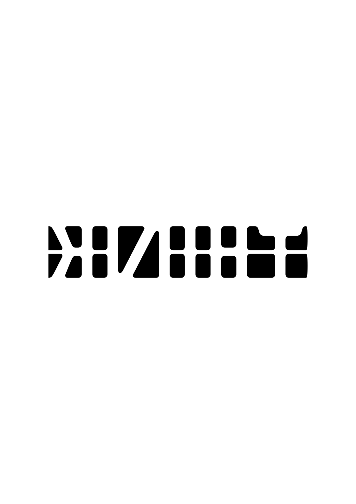
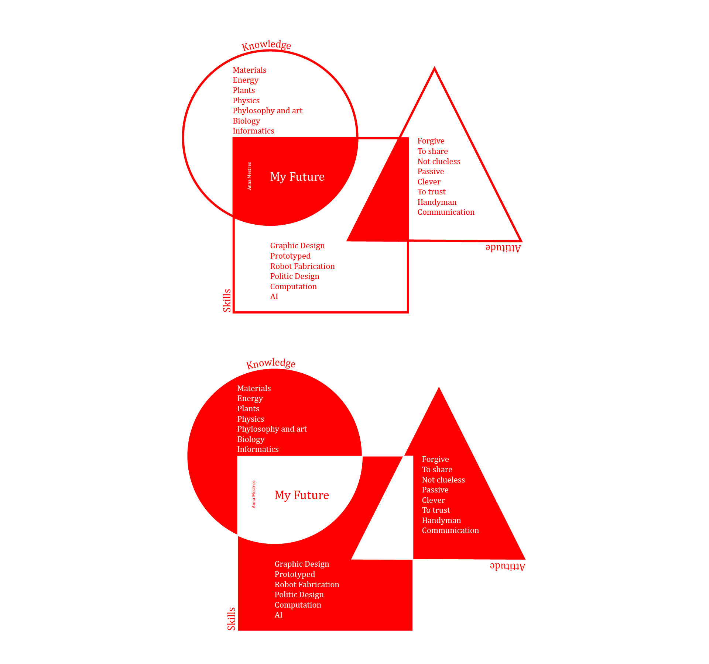
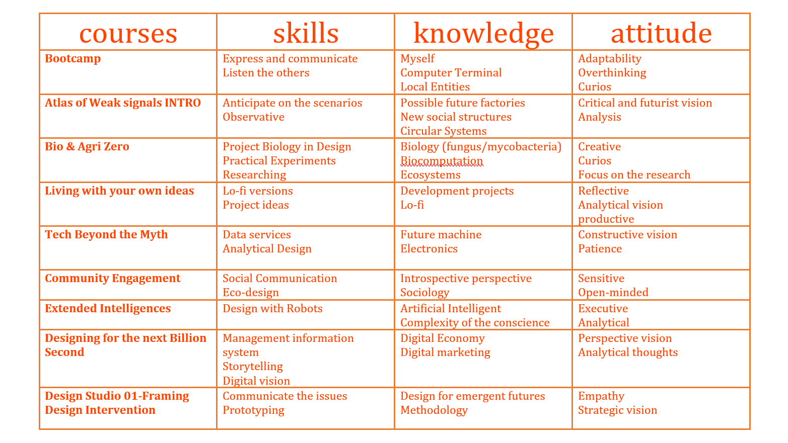

WHAT IS YOUR FIGHT? This is my poster of what is my fight.

I am always angry about how all the societal stigmas affects on people and on me in our daily life. All the class struggle, to be a woman, to be Catalan, to be white, to be myself. How we all live in a bubble trying to be better in a capitalist world that press people to their decline as a human. I am a person with strong ideals and critical thoughts. We are all different. But we are all humans. It's a cute paradox.
I am always going to try to open the eyes of people and make them think for themselves. And that's what I made. Because with all the fights that I am trying to deal, the fight of making people think, it's my biggest frustration. Because sometimes we think that we cannot see anything, but there is always a way to correlate the things and see something that have a sense.
MY SKILLS - ATTITUDE - KNOWLEDGE

There are too many things to understand in this world to let them ignore. Grown up is in our DNA. All the expects that I want to improve are correlated with the aspect of make a change in the world.
MAP OF THE COURSES

REFLECTION
After this week I realized that it doesn't matter where are you coming from, your gender, your sexuality, your sex, your religion, your family, your nationality, we all want to help on the evolution of the world, helping and developing projects to create a better world. Even if it's an utopic idea, because man is wolf to man.